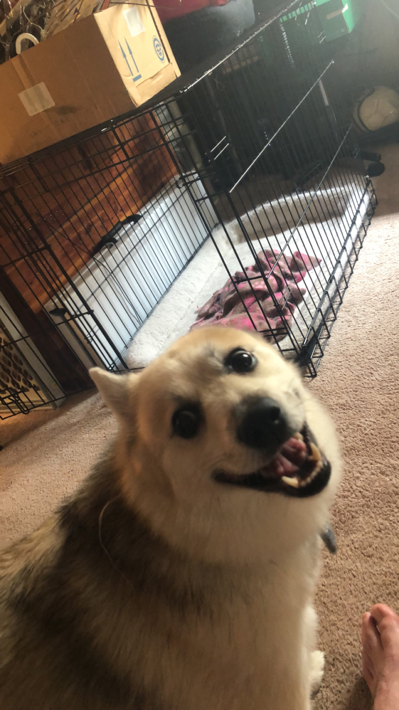
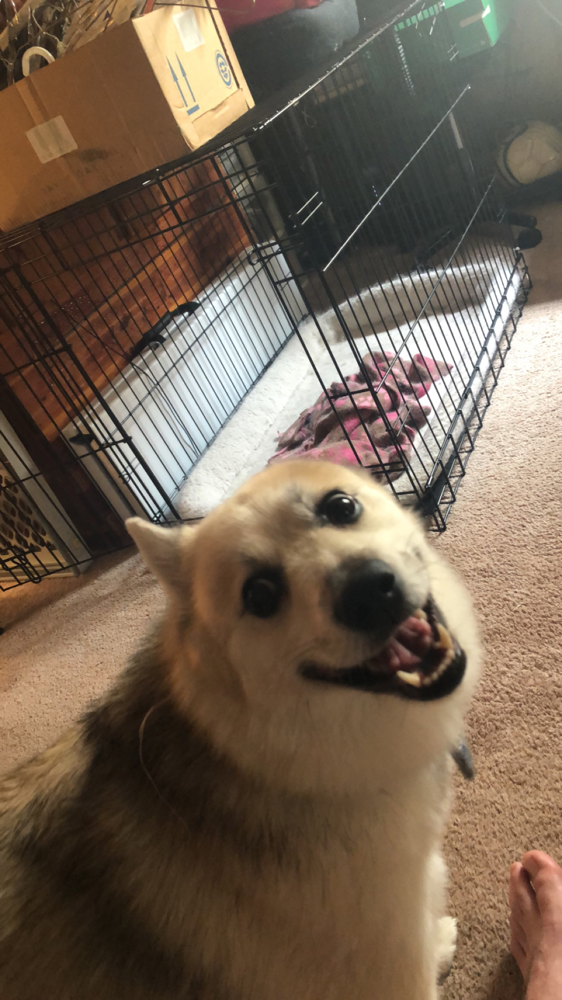

I really like videogames, but thats not all. I take a passion in listening to music and really feeling it's purpose, I over analyze it and get meanings that no one else sees. I enjoy figuring things out and spending time to understand them. I've had two jobs in my life. My first job was at a restaurant as a dishwasher. I worked hard and saw some of the people around me use excuses to get by. I later got a job after I graduated highschool where I cut boards all day. This job was the most physical and self-draining job I could imagine, but it taught me so much. It taught me to work hard to work less. Work hard in school to be smart enough to use your brain for work.